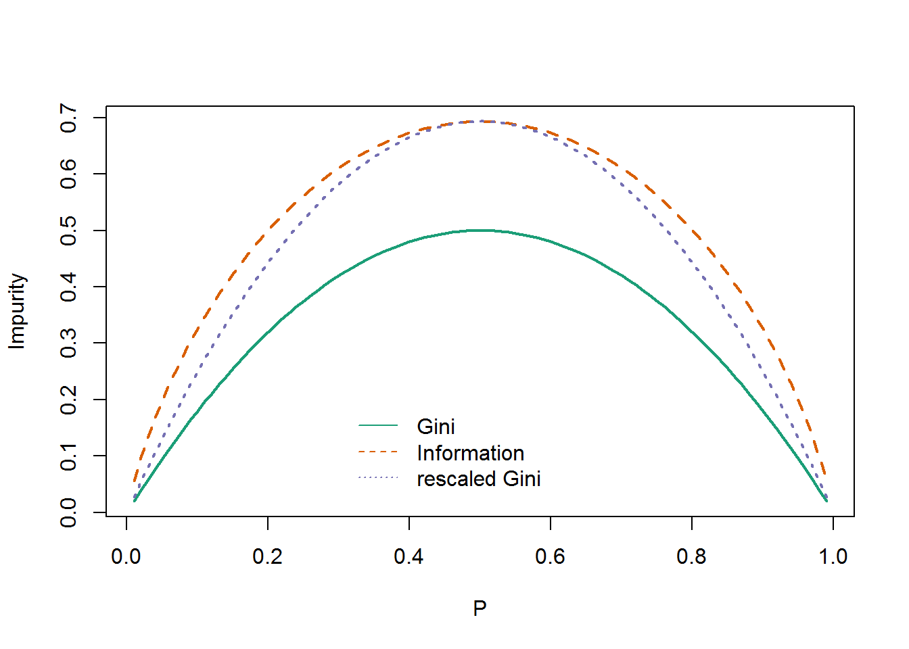

Lesson 10 Trees
Motivation
Decision trees are extremely intuitive ways to classify or label objects: you simply ask a series of questions designed to zero-in on the classification.
The most commonly used binary splitting makes this extremely efficient: in a well-constructed tree, each question will cut the number of options by approximately half, very quickly narrowing the options even among a large number of classes. The trick, of course, comes in deciding which questions to ask at each step. In machine learning implementations of decision trees, the questions generally take the form of axis-aligned splits in the data: that is, each node in the tree splits the data into two groups using a cutoff value within one of the features. Let’s now look at an example of this.
Consider the following two-dimensional data, which has one of four class labels:
import pandas as pd
import numpy as np
import matplotlib.pyplot as plt
import seaborn as sns
plt.style.use('ggplot')
from sklearn.datasets import make_blobs
X, y = make_blobs(n_samples=300, centers=4,
random_state=0, cluster_std=1.0)
plt.scatter(X[:, 0], X[:, 1], c=y, s=50, cmap='rainbow');Side-Note:
* From GeeksforGeeks: “When a module is imported within a Python file, the interpreter first searches for the specified module among its built-in modules. If not found it looks through the list of directories defined by sys.path.”
* import sys
* sys.path
* Add your own module directory to Python with:
* sys.path.append()
# from helpers_05_08 import visualize_tree
# from sklearn.tree import DecisionTreeClassifier
# from sklearn.datasets import make_blobs
#
#
# fig, ax = plt.subplots(1, 4, figsize=(16, 3))
# fig.subplots_adjust(left=0.02, right=0.98, wspace=0.1)
#
# X, y = make_blobs(n_samples=300, centers=4,
# random_state=0, cluster_std=1.0)
#
# for axi, depth in zip(ax, range(1, 5)):
# model = DecisionTreeClassifier(max_depth=depth)
# visualize_tree(model, X, y, ax=axi)
# axi.set_title('depth = {0}'.format(depth))
# fig.savefig('figures/05.08-decision-tree-levels.png')Decision Tree Levels

10.1 Node Impurity
A classification tree is built by the following process: first the single variable
is found which best splits the data into two groups (best will be defined
shortly). The data is separated, and then this process is applied
separately to each sub-group, and so on recursively until the subgroups either reach a minimum size or until no improvement can be made.
The partitioning method can be applied to many different kinds of data. We will start by looking at the classification problem, which is one of the more instructive cases (but also has the most complex equations). The sample population consists of \(n\) observations from \(K\) classes. A given model will break these observations into \(k\) terminal groups; to each of these groups is assigned a predicted class.
Most tree algorithms use one of several measures of impurity, or diversity, of a node. Let us denote \(\hat{p}_{mk}\) as the proportion of training observations in the \(m\)th region that are from the \(k\)th class. We then define the Gini index as \[ G_m = \sum_{i=1}^K { \hat{p}_{mk}(1 - \hat{p}_{mk} ) } \] Remembering \(p (1-p)\) to be the variance of the Bernoulli distribution, the Gini index measures the total variance across the \(K\) classes. For nearly “pure” regions (all \(\hat{p}_{mk}\) being close to 0 or 1), it takes on a very small value.
An alternative measure is given by the information index or cross entropy \[ D_m = - \sum_{i=1}^K { \hat{p}_{mk} \log{ \hat{p}_{mk} } } \]
NOTE: The expressions above are general enough for multiple category classification and hence more complicated than the version discussed in class.For binary outcomes \((y \in 0,1)\) the Gini index reduces to simply \[ G_m = 2 \hat{p}_m (1 - \hat{p}_m ) \]
The two impurity functions are plotted in the figure below, along with a rescaled version of the Gini measure. For the two class problem the measures differ only slightly, and will nearly always choose the same split point.

For example, in a two-class problem with 400 observations in each class (denote this by (400, 400)), suppose one split created nodes (300, 100) and (100, 300), while the other created nodes (200, 400) and (200, 0). Compute the misclassification rate and write it down formally.
Explanations and examples at:
https://scikit-learn.org/stable/modules/tree.html
import pydot
from IPython.display import Image
from sklearn.model_selection import train_test_split, cross_val_score
from six import StringIO
from sklearn.tree import DecisionTreeRegressor, DecisionTreeClassifier, export_graphviz
from sklearn.ensemble import BaggingClassifier, RandomForestClassifier, BaggingRegressor, RandomForestRegressor, GradientBoostingRegressor
from sklearn.metrics import mean_squared_error,confusion_matrix, classification_report
sns.set_style('white')from sklearn.datasets import load_iris
from sklearn import tree
from graphviz import Source
import graphviz
plt.rcParams["figure.figsize"]=3,3
iris = load_iris()
clf = tree.DecisionTreeClassifier()
clf = clf.fit(iris.data, iris.target)
dot_data = tree.export_graphviz(clf, out_file=None,
feature_names=iris.feature_names,
precision = 1,
filled=True, rounded=True)
graph = graphviz.Source(dot_data)
graph## <graphviz.files.Source object at 0x7fb1badaff60># This function creates images of tree models using pydot
def print_tree(estimator, features, class_names=None, filled=True):
tree = estimator
names = features
color = filled
classn = class_names
dot_data = StringIO()
export_graphviz(estimator, out_file=dot_data, feature_names=features, class_names=classn, filled=filled)
graph = pydot.graph_from_dot_data(dot_data.getvalue())
return(graph)10.2 Regression Trees
In R, I exported the dataset from package ‘ISLR’ to a csv file.
df = pd.read_csv('../data/Hitters.csv').dropna()
df.info()## <class 'pandas.core.frame.DataFrame'>
## Int64Index: 263 entries, 1 to 321
## Data columns (total 21 columns):
## # Column Non-Null Count Dtype
## --- ------ -------------- -----
## 0 Unnamed: 0 263 non-null object
## 1 AtBat 263 non-null int64
## 2 Hits 263 non-null int64
## 3 HmRun 263 non-null int64
## 4 Runs 263 non-null int64
## 5 RBI 263 non-null int64
## 6 Walks 263 non-null int64
## 7 Years 263 non-null int64
## 8 CAtBat 263 non-null int64
## 9 CHits 263 non-null int64
## 10 CHmRun 263 non-null int64
## 11 CRuns 263 non-null int64
## 12 CRBI 263 non-null int64
## 13 CWalks 263 non-null int64
## 14 League 263 non-null object
## 15 Division 263 non-null object
## 16 PutOuts 263 non-null int64
## 17 Assists 263 non-null int64
## 18 Errors 263 non-null int64
## 19 Salary 263 non-null float64
## 20 NewLeague 263 non-null object
## dtypes: float64(1), int64(16), object(4)
## memory usage: 45.2+ KBX = df[['Years', 'Hits']].values
y = np.log(df.Salary.values)
fig, (ax1, ax2) = plt.subplots(1,2, figsize=(11,4))
ax1.hist(df.Salary.values)## (array([108., 50., 49., 27., 11., 7., 2., 6., 1., 2.]), array([ 67.5 , 306.75, 546. , 785.25, 1024.5 , 1263.75, 1503. ,
## 1742.25, 1981.5 , 2220.75, 2460. ]), <BarContainer object of 10 artists>)ax1.set_xlabel('Salary')## Text(0.5, 0, 'Salary')ax2.hist(y)## (array([23., 21., 25., 31., 28., 36., 48., 29., 13., 9.]), array([4.212, 4.572, 4.931, 5.291, 5.65 , 6.01 , 6.37 , 6.729, 7.089,
## 7.448, 7.808]), <BarContainer object of 10 artists>)ax2.set_xlabel('Log(Salary)');regr = DecisionTreeRegressor(max_leaf_nodes=3)
regr.fit(X, y)## DecisionTreeRegressor(max_leaf_nodes=3)Figure 8.1
dot_data = tree.export_graphviz(regr, out_file=None,
feature_names=['Years', 'Hits'],
precision = 1,
filled=True, rounded=True)
graph = graphviz.Source(dot_data)
graph## <graphviz.files.Source object at 0x7fb10d1be358>FIGURE 8.1 For the Hitters data, a regression tree for predicting the log salary of a baseball player, based on the number of years that he has played in the major leagues and the number of hits that he made in the previous year. At a given internal node, the label (of the form Xj < tk) indicates the left-hand branch emanating from that split, and the right-hand branch corresponds to Xj ≥ tk. For instance, the split at the top of the tree results in two large branches. The left-hand branch corresponds to Years<4.5, and the right-hand branch corresponds to Years>=4.5. The tree has two internal nodes and three terminal nodes, or leaves. The number in each leaf is the mean of the response for the observations that fall there.
Figure 8.2
df.plot('Years', 'Hits', kind='scatter', color='orange', figsize=(7,6))## <AxesSubplot:xlabel='Years', ylabel='Hits'>plt.xlim(0,25)## (0.0, 25.0)plt.ylim(ymin=-5)## (-5.0, 249.85)plt.xticks([1, 4.5, 24])## ([<matplotlib.axis.XTick object at 0x7fb10b682748>, <matplotlib.axis.XTick object at 0x7fb10b682198>, <matplotlib.axis.XTick object at 0x7fb10b44fc50>], [Text(0, 0, ''), Text(0, 0, ''), Text(0, 0, '')])plt.yticks([1, 117.5, 238])## ([<matplotlib.axis.YTick object at 0x7fb10b682f98>, <matplotlib.axis.YTick object at 0x7fb10b682b70>, <matplotlib.axis.YTick object at 0x7fb10b9db160>], [Text(0, 0, ''), Text(0, 0, ''), Text(0, 0, '')])plt.vlines(4.5, ymin=-5, ymax=250)## <matplotlib.collections.LineCollection object at 0x7fb10b443b70>plt.hlines(117.5, xmin=4.5, xmax=25)## <matplotlib.collections.LineCollection object at 0x7fb10b443e80>plt.annotate('R1', xy=(2,117.5), fontsize='xx-large')## Text(2, 117.5, 'R1')plt.annotate('R2', xy=(11,60), fontsize='xx-large')## Text(11, 60, 'R2')plt.annotate('R3', xy=(11,170), fontsize='xx-large');Pruning
This is currently not supported in scikit-learn. See first point under ’disadvantages of decision trees in the documentation. Implementation has been discussed but Random Forests have better predictive qualities than a single pruned tree anyway if I understand correctly.
10.3 Classification Trees
Dataset available on http://www-bcf.usc.edu/~gareth/ISL/data.html
df2 = pd.read_csv('../data/Heart.csv').drop('Unnamed: 0', axis=1).dropna()
df2.info()## <class 'pandas.core.frame.DataFrame'>
## Int64Index: 297 entries, 0 to 301
## Data columns (total 14 columns):
## # Column Non-Null Count Dtype
## --- ------ -------------- -----
## 0 Age 297 non-null int64
## 1 Sex 297 non-null int64
## 2 ChestPain 297 non-null object
## 3 RestBP 297 non-null int64
## 4 Chol 297 non-null int64
## 5 Fbs 297 non-null int64
## 6 RestECG 297 non-null int64
## 7 MaxHR 297 non-null int64
## 8 ExAng 297 non-null int64
## 9 Oldpeak 297 non-null float64
## 10 Slope 297 non-null int64
## 11 Ca 297 non-null float64
## 12 Thal 297 non-null object
## 13 AHD 297 non-null object
## dtypes: float64(2), int64(9), object(3)
## memory usage: 34.8+ KBdf2.ChestPain = pd.factorize(df2.ChestPain)[0]
df2.Thal = pd.factorize(df2.Thal)[0]X2 = df2.drop('AHD', axis=1)
y2 = pd.factorize(df2.AHD)[0]clf = DecisionTreeClassifier(max_depth=None, max_leaf_nodes=6, max_features=3)
clf.fit(X2,y2)## DecisionTreeClassifier(max_features=3, max_leaf_nodes=6)clf.score(X2,y2)## 0.8114478114478114graph2, = print_tree(clf, features=X2.columns, class_names=['No', 'Yes'])
Image(graph2.create_png())## <IPython.core.display.Image object>dtreeviz
We are using the wonderful tree visualization library dtreeviz :
https://github.com/parrt/dtreeviz
from dtreeviz.trees import dtreeviz
clf1 = DecisionTreeClassifier(max_depth=3) # limit depth of tree
iris = load_iris()
clf1.fit(iris.data, iris.target)## DecisionTreeClassifier(max_depth=3)dtreeviz(clf1,
iris.data,
iris.target,
target_name='variety',
feature_names=iris.feature_names,
class_names=["setosa", "versicolor", "virginica"] # need class_names for classifier
) ## <dtreeviz.trees.DTreeViz object at 0x7fb10ad755c0>Quiz
- Outliers
- Classification Trees are resistant to outliers
- Regression Trees are resistant to outliers
- Is “diversity” good or bad for prediction?
- The regions are disjoint and rectangular
- Interactions need to be explicitly be modeled like in regression.
- All rows with missing values in any column need to be removed
- Nature of trees
- Are trees “local” or “global” models?
- Trees are piecewise constant models
Lab
Fitting Classification Trees
In R, I exported the dataset from package ‘ISLR’ to a csv file.
df3 = pd.read_csv('../data/Carseats.csv').drop('Unnamed: 0', axis=1)
df3.head()## Sales CompPrice Income Advertising ... Age Education Urban US
## 0 9.50 138 73 11 ... 42 17 Yes Yes
## 1 11.22 111 48 16 ... 65 10 Yes Yes
## 2 10.06 113 35 10 ... 59 12 Yes Yes
## 3 7.40 117 100 4 ... 55 14 Yes Yes
## 4 4.15 141 64 3 ... 38 13 Yes No
##
## [5 rows x 11 columns]df3['High'] = df3.Sales.map(lambda x: 1 if x>8 else 0)
df3.ShelveLoc = pd.factorize(df3.ShelveLoc)[0]
df3.Urban = df3.Urban.map({'No':0, 'Yes':1})
df3.US = df3.US.map({'No':0, 'Yes':1})
df3.info()## <class 'pandas.core.frame.DataFrame'>
## RangeIndex: 400 entries, 0 to 399
## Data columns (total 12 columns):
## # Column Non-Null Count Dtype
## --- ------ -------------- -----
## 0 Sales 400 non-null float64
## 1 CompPrice 400 non-null int64
## 2 Income 400 non-null int64
## 3 Advertising 400 non-null int64
## 4 Population 400 non-null int64
## 5 Price 400 non-null int64
## 6 ShelveLoc 400 non-null int64
## 7 Age 400 non-null int64
## 8 Education 400 non-null int64
## 9 Urban 400 non-null int64
## 10 US 400 non-null int64
## 11 High 400 non-null int64
## dtypes: float64(1), int64(11)
## memory usage: 37.6 KBdf3.head(5)## Sales CompPrice Income Advertising ... Education Urban US High
## 0 9.50 138 73 11 ... 17 1 1 1
## 1 11.22 111 48 16 ... 10 1 1 1
## 2 10.06 113 35 10 ... 12 1 1 1
## 3 7.40 117 100 4 ... 14 1 1 0
## 4 4.15 141 64 3 ... 13 1 0 0
##
## [5 rows x 12 columns]X = df3.drop(['Sales', 'High'], axis=1)
y = df3.High
X_train, X_test, y_train, y_test = train_test_split(X, y, test_size=0.5, random_state=0)clf = DecisionTreeClassifier(max_depth=6)
clf.fit(X, y)## DecisionTreeClassifier(max_depth=6)print(classification_report(y, clf.predict(X)))## precision recall f1-score support
##
## 0 0.89 0.99 0.93 236
## 1 0.98 0.82 0.89 164
##
## accuracy 0.92 400
## macro avg 0.93 0.90 0.91 400
## weighted avg 0.92 0.92 0.92 400#graph3, = print_tree(clf, features=X.columns, class_names=['No', 'Yes'])
#Image(graph3.create_png())clf.fit(X_train, y_train)## DecisionTreeClassifier(max_depth=6)pred = clf.predict(X_test)cm = pd.DataFrame(confusion_matrix(y_test, pred).T, index=['No', 'Yes'], columns=['No', 'Yes'])
cm.index.name = 'Predicted'
cm.columns.name = 'True'
cm## True No Yes
## Predicted
## No 99 32
## Yes 19 50# Precision of the model using test data is 74%
print(classification_report(y_test, pred))## precision recall f1-score support
##
## 0 0.76 0.84 0.80 118
## 1 0.72 0.61 0.66 82
##
## accuracy 0.74 200
## macro avg 0.74 0.72 0.73 200
## weighted avg 0.74 0.74 0.74 200Pruning not implemented in scikit-learn.
Fitting Regression Trees
In R, I exported the dataset from package ‘MASS’ to a csv file.
boston_df = pd.read_csv('../data/Boston.csv')
boston_df.info()## <class 'pandas.core.frame.DataFrame'>
## RangeIndex: 506 entries, 0 to 505
## Data columns (total 14 columns):
## # Column Non-Null Count Dtype
## --- ------ -------------- -----
## 0 crim 506 non-null float64
## 1 zn 506 non-null float64
## 2 indus 506 non-null float64
## 3 chas 506 non-null int64
## 4 nox 506 non-null float64
## 5 rm 506 non-null float64
## 6 age 506 non-null float64
## 7 dis 506 non-null float64
## 8 rad 506 non-null int64
## 9 tax 506 non-null int64
## 10 ptratio 506 non-null float64
## 11 black 506 non-null float64
## 12 lstat 506 non-null float64
## 13 medv 506 non-null float64
## dtypes: float64(11), int64(3)
## memory usage: 55.5 KBfrom sklearn.datasets import *
regr = tree.DecisionTreeRegressor(max_depth=3)
boston = load_boston()
regr.fit(boston.data, boston.target)## DecisionTreeRegressor(max_depth=3)viz = dtreeviz(regr,
boston.data,
boston.target,
target_name='price',
feature_names=boston.feature_names)
#viz.view()
viz## <dtreeviz.trees.DTreeViz object at 0x7fb10a9b5fd0>